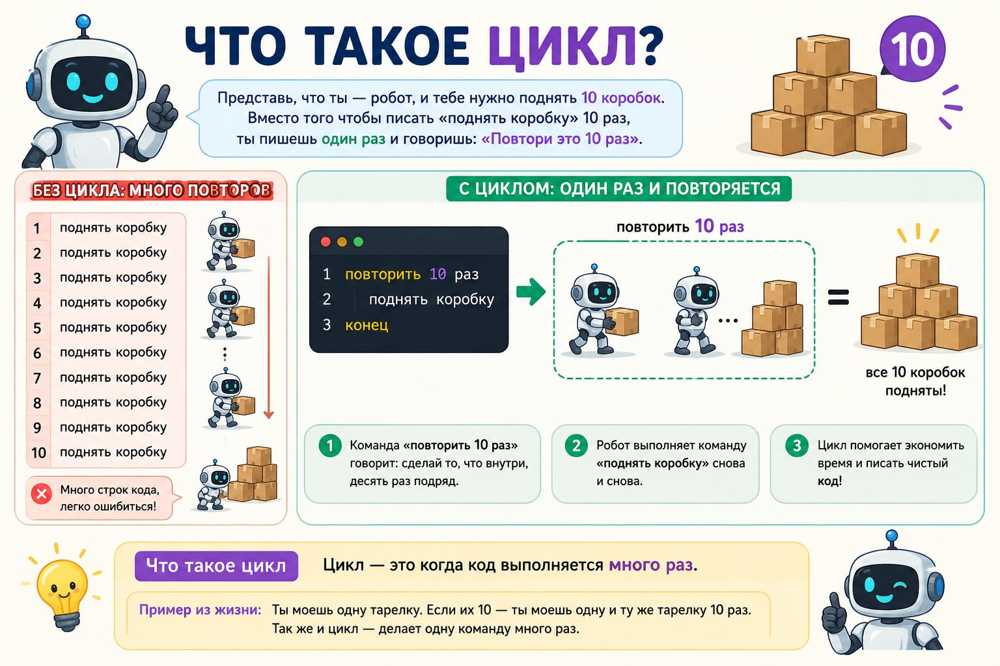
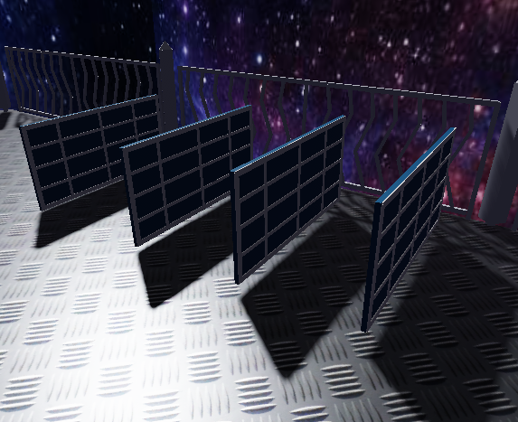
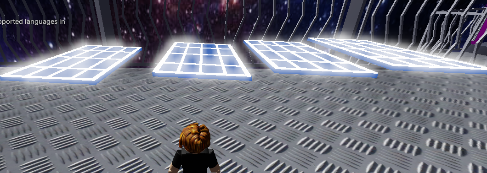
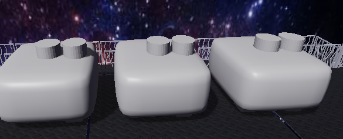
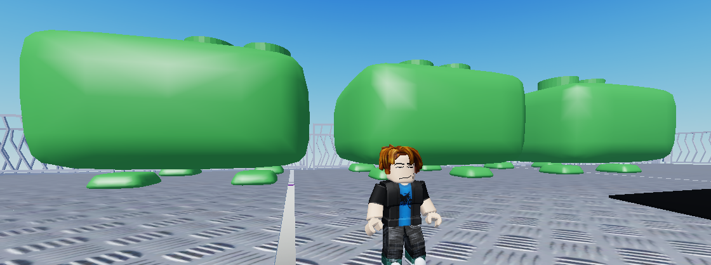
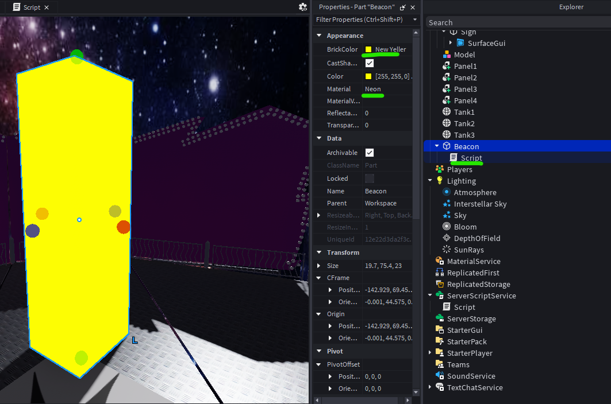
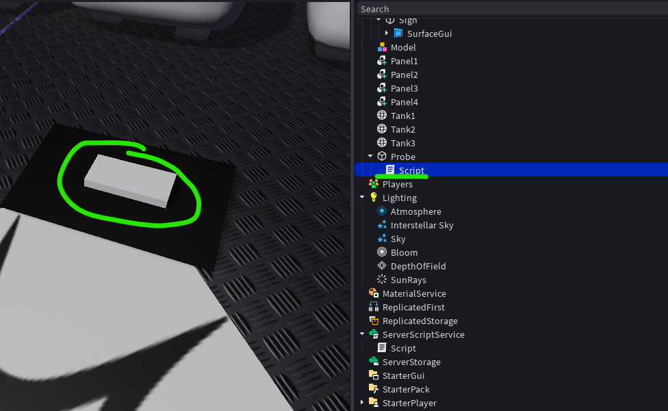
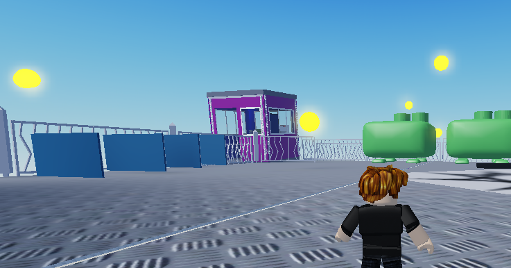
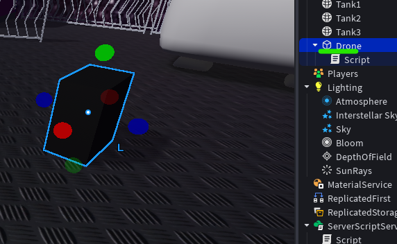

🎯 На этом уроке ты:
- 🔄 узнаешь, что такое цикл и зачем он нужен
- 📐 научишься писать цикл for со счётчиком
- ♾️ познакомишься с бесконечным циклом
while true do - 🚀 запрограммируешь поворот солнечных панелей
- ⛽ создашь заправку топливных баков
- 💡 сделаешь мигающий маяк
- 🛸 отправишь спасательный зонд к планете
- ⚡ соберёшь энергетические сферы дроном
| Этап занятия | Время | Что делаем |
|---|---|---|
| Теория: что такое цикл | 10 мин | Циклы for, while, бесконечные |
| Задание 1 — Солнечные панели | 12 мин | Цикл для поворота 4 панелей |
| Задание 2 — Топливные баки | 12 мин | Цикл для заполнения 3 баков |
| Задание 3 — Аварийный маяк | 12 мин | Бесконечный цикл с миганием |
| Задание 4 — Спасательный зонд | 12 мин | Цикл for для движения вперёд |
| Задание 5 — Энергетические сферы | 14 мин | Дрон собирает сферы по кругу |
| Творческое задание | 10 мин | Придумай свой механизм с циклами |
| Опрос и итоги | 10 мин | Проверяем себя |
| Итого | 80 мин | — |
0 Теория: что такое цикл?
🤖 Робот-повторюшка
Цикл — это как робот, который умеет выполнять одну и ту же команду много раз подряд. Вместо того чтобы писать 100 одинаковых строчек кода, мы говорим циклу: «Сделай это 100 раз!»

Цикл — это робот, который повторяет команды
📝 Строение цикла for
Цикл for состоит из трёх частей:
- Счётчик — переменная, которая считает шаги (обычно
i). - Начало и конец — от какого до какого числа считать.
- Тело цикла — команды, которые выполняются на каждом шаге.
print("Шаг номер " .. i)
end
Результат в Output:
Шаг номер 1 Шаг номер 2 Шаг номер 3 Шаг номер 4 Шаг номер 5
Переменная i сама увеличивается на 1 после каждого круга.
♾️ Бесконечный цикл while true do
Иногда нужно, чтобы действие повторялось вечно, пока игра работает. Например, мигающий маяк или вращение планеты.
-- код, который выполняется бесконечно
wait(1) -- обязательно делаем паузу!
end
wait() внутри бесконечного цикла, Roblox Studio может зависнуть.
Всегда давай игре «подышать» с помощью wait().
📊 Сравнение циклов
| Цикл | Когда использовать | Пример из космоса |
|---|---|---|
for i = 1, N do |
Знаешь точное количество повторений | Повернуть 4 солнечные панели |
while true do |
Нужно выполнять бесконечно | Мигающий аварийный маяк |
for i = N, 1, -1 do |
Обратный отсчёт | Таймер до запуска ракеты (10,9,8...) |
Нажми на вопрос — Алиса ответит тебе прямо сейчас!
Просто скажи: «Алиса, как сделать обратный отсчёт в Roblox?»
📘 Шпаргалка по циклам
for i = 1, 5 dofor i = 5, 1, -1 dowhile true dowait(), чтобы не завислоi, j, step — часто используютfor panel = 1, 4 dowait(0.5) — пауза полсекундыwait() цикл выполнится мгновенноfor i = 1, #items do#items — количество элементов в таблице🗺️ Для этого урока приготовлена готовая карта «Галактика‑7». Скачай её и открой в Roblox Studio.
☀️ Задание 1 — Солнечные панели
На станции есть 4 солнечные панели. Нужно активировать каждую, повернув её на 90 градусов. После поворота панель должна изменить цвет на жёлтый и засветиться, чтобы показать, что она активирована.
- Найди 4 Part с именами Panel1, Panel2, Panel3, Panel4.
- Напиши скрипт, который в цикле поворачивает каждую панель на 90° и меняет её цвет на жёлтый (Bright yellow) и материал на Neon.
local panel = [найти панель в Workspace по имени]
if panel then
panel.CFrame = panel.CFrame * CFrame.Angles([угол X], [угол Y], [угол Z])
panel.BrickColor = BrickColor.new([название цвета])
panel.Material = Enum.Material.[название материала]
print("Панель " .. i .. " активирована и светится!")
end
end
-

-
for i = 1, 4 do
local panel = workspace:FindFirstChild("Panel" .. i)
if panel then
-- Поворачиваем на 90° (1.57 радиан)
panel.CFrame = panel.CFrame * CFrame.Angles(-1.5, 0, 0)
-- Подсвечиваем: меняем цвет на жёлтый и делаем материал Neon
panel.BrickColor = BrickColor.new("Bright yellow")
panel.Material = Enum.Material.Neon
print("Панель " .. i .. " активирована и светится!")
end
end -

CFrame.Angles(-1.5, 0, 0) — поворот на 90° вокруг оси Y. 🌟 Neon — специальный материал, который делает объект светящимся. В сочетании с жёлтым цветом панель будет выглядеть как активная.
⛽ Задание 2 — Топливные баки
На станции есть 3 топливных бака. Их нужно заполнить — каждый бак должен стать зелёным.
- Найди 3 Part с именами Tank1, Tank2, Tank3.
- Напиши скрипт в ServerScriptService, который в цикле меняет цвет каждого бака на зелёный.
for i = 1, 3 do
local tank = [найти танки в Workspace](tanks[i])
if tank then
tank.BrickColor = BrickColor.new([впиши цвет])
print(tanks[i] .. " заполнен!")
end
end
-

-
local tanks = {"Tank1", "Tank2", "Tank3"}
for i = 1, 3 do
local tank = workspace:FindFirstChild(tanks[i])
if tank then
tank.BrickColor = BrickColor.new("Bright green")
print(tanks[i] .. " заполнен!")
end
end -

💡 Задание 3 — Аварийный маяк
Маяк на вершине станции должен постоянно мигать, привлекая внимание спасателей.
- Создай Part с именем Beacon.
- Напиши бесконечный цикл, который мигает маяком (включает/выключает прозрачность).
-

-
local beacon = script.Parent
while true do
beacon.Transparency = 0 -- включён
wait(0.5)
beacon.Transparency = 1 -- выключен
wait(0.5)
end
wait(), иначе игра зависнет!
🛸 Задание 4 — Спасательный зонд
Отправь зонд к планете. Зонд должен двигаться вверх 50 раз, по 0.5 студии за шаг.
- Создай Part с именем Probe.
- Напиши цикл
for, который двигает зонд вверх на 0.5 каждый шаг.
-

-
local probe = script.Parent
local step = 0.5
for i = 1, 50 do
probe.Position = probe.Position + Vector3.new(0, step, 0)
print("Шаг " .. i .. ": зонд летит!")
wait(0.1)
end
print("🚀 Зонд достиг планеты!") -
⚡ Задание 5 — Энергетические сферы
В открытом космосе бесконечно появляются энергетические сферы. Запрограммируй дрона, чтобы он собирал их все по очереди.

- Создай дрона — обычный чёрный Part с именем Drone.
- Напиши внутри дрона скрипт, который бесконечно ищет следующую сферу (Sphere1, Sphere2, …) и собирает её.
-

-
local drone = script.Parent
local i = 1
while true do
local sphere = workspace:FindFirstChild("Sphere" .. i)
if sphere then
drone.Position = sphere.Position
sphere.Transparency = 1
print("Сфера " .. i .. " собрана!")
i = i + 1
wait(2)
else
wait(1) -- ждём появления новой сферы
end
end
for внутри перемещения, чтобы он летел красиво.
🎨 Творческое задание — Твой космический механизм
Придумай и запрограммируй на станции любой механизм, который использует циклы. Вот несколько идей:
- 🔄 Вращающаяся антенна, которая делает 10 оборотов.
- 🔵 Мигающие лампочки на шлюзе (5 лампочек загораются по очереди).
- 📡 Сканер, который двигается вперёд-назад.
- 🛰️ Спутник, который облетает станцию по кругу.
Ты можешь использовать любые Part на карте или создать свои. Главное — чтобы работал цикл!
for i = 1, 5 do.
🧩 Быстрая проверка: выбери правильные карточки
1. Что делает цикл?
2. Какой цикл выполняется бесконечно?
3. Сколько раз выполнится код: for i = 1, 5 do?
4. Что нужно добавить в бесконечный цикл, чтобы игра не зависла?
5. Какой код правильно пишет цикл for?
📝 Итоговый тест «Циклы»
1. Какой цикл используется, когда известно точное количество повторений?
2. Сколько раз выполнится цикл: for i = 1, 3 do?
3. Какой цикл выполняется вечно?
4. Что выведет код: for i = 3, 1, -1 do print(i) end?
5. Зачем нужен wait() в бесконечном цикле?
🧩 Задание: соотнеси цикл с его описанием
Выбери для каждого цикла правильное описание.
| Цикл | Описание |
|---|---|
for i = 1, 5 do print(i) end |
|
for i = 5, 1, -1 do print(i) end |
|
while true do wait(1) end |
|
for i = 1, 10 do wait() end |
🧩 Заполни пропуски в коде
Впиши правильные числа или слова, чтобы цикл заработал как надо.
1. Цикл, который повторяется 5 раз:
for i = 1, do
2. Бесконечный цикл (впиши ключевые слова):
do
3. Обратный отсчёт от 3 до 1:
for i = 3, 1, do
💭 Твой опыт
Оцени, как прошло занятие: